Royaume d'Haremcia
Le peuple .
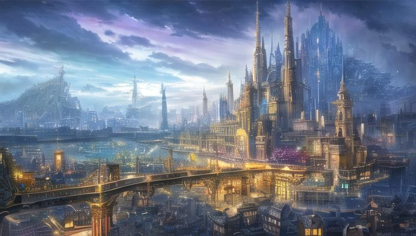
Une des plus grande ville dans le royaume d'Haremcia
Une des villa appartenant au bourgeois de Haremcia
Les hauts rangs
Scientifiques (4)
Les scientifiques jouent un rôle crucial pour le développement d'Haremcia, contribuant à son avancée technologique et scientifique.
Elles exercent leur activité dans des laboratoires situés dans la capitale.
Chacune possède une spécialisation en physique, chimie ou dans d'autres domaines scientifiques, leur permettant de collaborer efficacement pour relever les défis et résoudre les problèmes auxquels le royaume est confronté.
Les scientifiques sont extremement importantes pour le développement du royaume
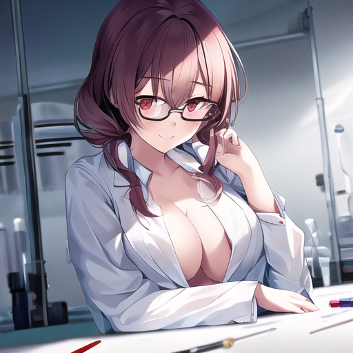
Les scientifiques sont extremement importantes pour le développement du royaume
Les scientifiques sont extremement importantes pour le développement du royaume
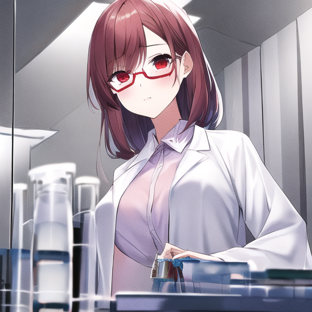
Les scientifiques sont extremement importantes pour le développement du royaume
Bourgeoises (3)
Elles appartiennent à de grandes familles puissantes, bénéficiant de richesses et de pouvoirs acquis grâce au commerce ou à d'autres activités.
Elles sont réputées pour leur insolence et pour entretenir un cercle social très restreint, préservant ainsi leur statut et leur influence au sein de la société.
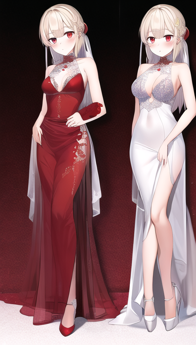
Lydia et Ophelia sont sœurs d'une grande et riche famille de joaillier
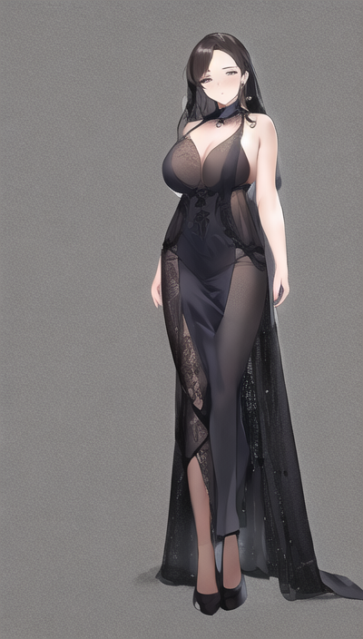
Cassandra est une des femmes qui contôle le marché du diamants à Haremcia
Juge (1)
Les juges d'Haremcia occupent une place centrale dans le système judiciaire du royaume, exerçant leur autorité avec impartialité et rigueur.
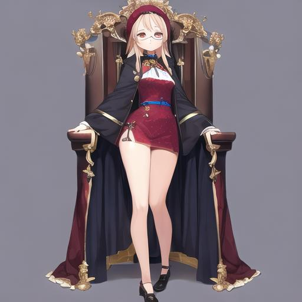
Ulena, la juge de Haremcia
Avocate (1)
Les avocates d'Haremcia jouent un rôle crucial dans le système judiciaire du royaume, défendant avec ardeur les droits et les intérêts de leurs clients.
Surtout quand ils payent bien
D'une grande aide si vous avez commit tout sorte de crimes
Grande École
Professeures (5)
Les Professeures de la plus grande école d'Haremcia.
Elles connaissent toutes leur sujet parfaitement et adorent guider la nouvelle génération vers le droit chemin.
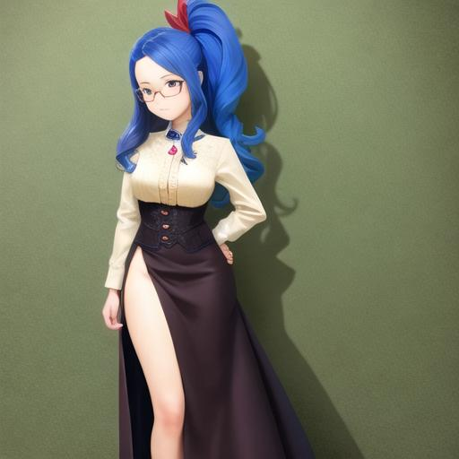
Une des nombreuses professeures de XXX
Une des nombreuses professeures de XXX
Une des nombreuses professeures de XXX
Une des nombreuses professeures de XXX
Une des nombreuses professeures de XXX
Etudientes (10)
Les étudientes de la plus grande école d'Haremcia. L'élite de la nation est formé ici.
Étudiente de la grande école XXX d'Haremcia
Étudiente de la grande école XXX d'Haremcia
Étudiente de la grande école XXX d'Haremcia
Étudiente de la grande école XXX d'Haremcia
Étudiente de la grande école XXX d'Haremcia
Étudiente de la grande école XXX d'Haremcia
Étudiente de la grande école XXX d'Haremcia
Étudiente de la grande école XXX d'Haremcia
Étudiente de la grande école XXX d'Haremcia
Étudiente de la grande école XXX d'Haremcia
Les hors société
Mafieuses (13)
La Mafia Red Skull est réputée pour son impitoyabilité et sa hiérarchie complexe, tout en étant respectée dans les cercles criminels.
Chaque membre occupe un rôle spécifique et excelle dans son domaine.
La mafia est principalement active dans les activités illégales telles que les casinos et les clubs de strip-tease, mais elle est également impliquée dans le trafic d'armes et de drogues.
Personne ne sait vraiment où est le QG de la mafia.
Elle est la dirigeante de la Mafia.
𝑴𝑨𝑭𝑰𝑨 𝑹𝑬𝑫 𝑺𝑲𝑼𝑳𝑳
Nom : Alpha
Position : Dirigeante Générale
Elle contrôle absolument tous dans la Mafia, elle prend les décisions et est complètement respectée, même crainte par certains membres.
Des rumeurs circulent qu'elle a un secret bien gardé de comment elle est arrivés au sommet de la mafia et de comment elle réussit à éviter les tentatives de meurtres.
Son comportement change fortement si elle est avec un allié, un simple étranger ou un ennemi. Pouvant être froide et sadique comme extrêmement douce est attentionné.
𝙸𝚗𝚏𝚘𝚛𝚖𝚊𝚝𝚒𝚘𝚗𝚜 𝚋𝚢 𝙴𝚁𝚁𝙾𝚁
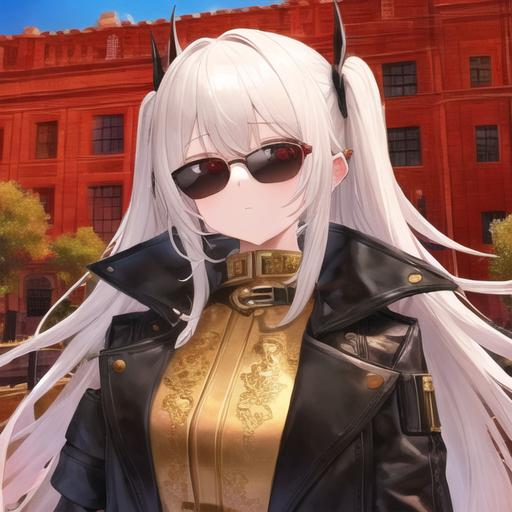
Elle est la dirigeante de la branche Armes de la Mafia
𝑴𝑨𝑭𝑰𝑨 𝑹𝑬𝑫 𝑺𝑲𝑼𝑳𝑳
Nom : Psi
Position : Dirigeante Branche Armes
Elle dirige la branche Armes de la Mafia, c'est elle qui s'occupe de tout le trafic, fabrication, test, expédition des armes partout dans la contrée de l'Ouest.
On entend dire que les stocks d'armes qu'elle possède dépassent celle de certains pays officiels, personne ne sait comment.
Son comportement est joueuse et elle est surtout extrêmement douée dans le maniement d'armes à feu. Pouvant utiliser un sniper ou un lance-roquette sans soucis.
𝙸𝚗𝚏𝚘𝚛𝚖𝚊𝚝𝚒𝚘𝚗𝚜 𝚋𝚢 𝙴𝚁𝚁𝙾𝚁
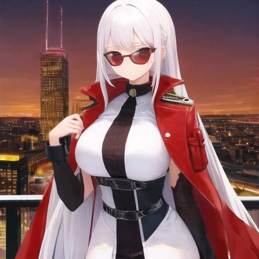
Elle est la dirigeante de la branche Prostitution de la Mafia
𝑴𝑨𝑭𝑰𝑨 𝑹𝑬𝑫 𝑺𝑲𝑼𝑳𝑳
Nom : Delta
Position : Dirigeante Branche Prostitution
Elle dirige la branche Prostitution de la Mafia, gérant habilement toutes les opérations liées au commerce du sexe, depuis la gestion des travailleurs jusqu'au contrôle des territoires et des revenus.
Certaines rumeurs circulent qu'elle aurait été de l'autre côté du podium autrefois.
Son comportement est aussi rusé que charmeur, maniant l'influence et la manipulation avec une habileté redoutable.
𝙸𝚗𝚏𝚘𝚛𝚖𝚊𝚝𝚒𝚘𝚗𝚜 𝚋𝚢 𝙴𝚁𝚁𝙾𝚁
Elle est la dirigeante de la branche Casino de la Mafia
𝑴𝑨𝑭𝑰𝑨 𝑹𝑬𝑫 𝑺𝑲𝑼𝑳𝑳
Nom : Lambda
Position : Dirigeante Branche Casino
Elle dirige la branche Casino de la Mafia, orchestrant tous les aspects du jeu clandestin, depuis les jeux de cartes jusqu'aux machines à sous.
On entend dire que certains de ces casinos seraient truqués par certains individus qu'on a vite oubliés ou perdu de vue.
Son comportement est calculateur et impassible, naviguant entre le risque et la prudence avec une maîtrise exceptionnelle, avec une certaines tendance au jeu ou au pari.
𝙸𝚗𝚏𝚘𝚛𝚖𝚊𝚝𝚒𝚘𝚗𝚜 𝚋𝚢 𝙴𝚁𝚁𝙾𝚁
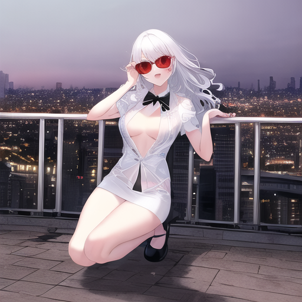
Elle est la dirigeante de la branche Blanchiment de la Mafia
𝑴𝑨𝑭𝑰𝑨 𝑹𝑬𝑫 𝑺𝑲𝑼𝑳𝑳
Nom : Xi
Position : Dirigeante Branche Blanchiment
Elle dirige la branche Blanchiment de la Mafia, supervisant de près le processus complexe de blanchiment d'argent provenant des activités criminelles,
veillant à ce que les flux financiers illicites soient dissimulés avec ingéniosité.
La rumeur court qu'elle aurait n'aurait pas vraiment distribué l'argent équitablement entre les branches de la mafia, ces rumeurs se sont vite classé sans suite.
Son comportement est discret et méthodique, jonglant avec les chiffres et les transactions sans laisser la moindre trace de suspicion.
𝙸𝚗𝚏𝚘𝚛𝚖𝚊𝚝𝚒𝚘𝚗𝚜 𝚋𝚢 𝙴𝚁𝚁𝙾𝚁
Elle est la dirigeante de la branche Assassinat de la Mafia
𝑴𝑨𝑭𝑰𝑨 𝑹𝑬𝑫 𝑺𝑲𝑼𝑳𝑳
Nom : Theta
Position : Dirigeante Branche Assassinat
Elle dirige la branche Assassinat de la Mafia, orchestrant avec précision et discrétion les éliminations ciblées et les règlements de comptes,
où chaque action est minutieusement planifiée pour garantir le succès et éviter toute détection.
Maintenant en retrait du terrain, elle avait commencé sa carrière très fort en tuant l'un des PDG les plus influents du GED.
Son comportement est froid et impitoyable parfois même sadique, naviguant dans l'ombre.
Elle montre certains signé de psychotique mais aucun moyen d'en avoir le coeur net.
𝙸𝚗𝚏𝚘𝚛𝚖𝚊𝚝𝚒𝚘𝚗𝚜 𝚋𝚢 𝙴𝚁𝚁𝙾𝚁
Elle est la dirigeante de la branche Drogues de la Mafia
𝑴𝑨𝑭𝑰𝑨 𝑹𝑬𝑫 𝑺𝑲𝑼𝑳𝑳
Nom : Gamma
Position : Dirigeante Branche Drogues
Elle dirige la branche Drogues de la Mafia, contrôlant habilement le commerce illicite de stupéfiants, des opiacés aux stimulants, et tout ce qui se trouve entre les mains de la Mafia.
Ayant la mainmise complète sur la production, le traitement et la distribution de toutes les drogues possibles (ainsi que certaines encore inexistantes).
Son comportement est à la fois discret et impérieux, maniant l'influence et la peur pour maintenir sa domination sur le marché des drogues.
Tous les concurrent s'étant volatilisé pour une raison demeurer à rester inconnu.
𝙸𝚗𝚏𝚘𝚛𝚖𝚊𝚝𝚒𝚘𝚗𝚜 𝚋𝚢 𝙴𝚁𝚁𝙾𝚁
Je pense qu'il est mieux de les éviter
𝑴𝑨𝑭𝑰𝑨 𝑹𝑬𝑫 𝑺𝑲𝑼𝑳𝑳
Nom : [Inconnu]
Position : Membre
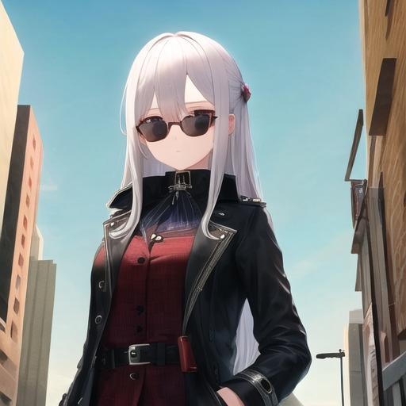
Je pense qu'il est mieux de les éviter
𝑴𝑨𝑭𝑰𝑨 𝑹𝑬𝑫 𝑺𝑲𝑼𝑳𝑳
Nom : [Inconnu]
Position : Membre
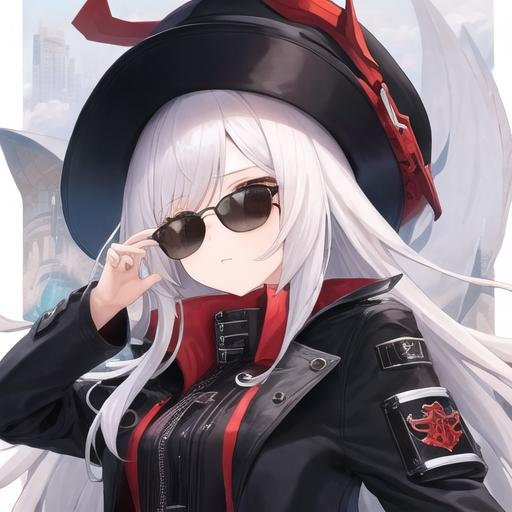
Je pense qu'il est mieux de les éviter
𝑴𝑨𝑭𝑰𝑨 𝑹𝑬𝑫 𝑺𝑲𝑼𝑳𝑳
Nom : [Inconnu]
Position : Membre
Je pense qu'il est mieux de les éviter
𝑴𝑨𝑭𝑰𝑨 𝑹𝑬𝑫 𝑺𝑲𝑼𝑳𝑳
Nom : [Inconnu]
Position : Membre
Je pense qu'il est mieux de les éviter
𝑴𝑨𝑭𝑰𝑨 𝑹𝑬𝑫 𝑺𝑲𝑼𝑳𝑳
Nom : [Inconnu]
Position : Membre
Je pense qu'il est mieux de les éviter
𝑴𝑨𝑭𝑰𝑨 𝑹𝑬𝑫 𝑺𝑲𝑼𝑳𝑳
Nom : [Inconnu]
Position : Membre